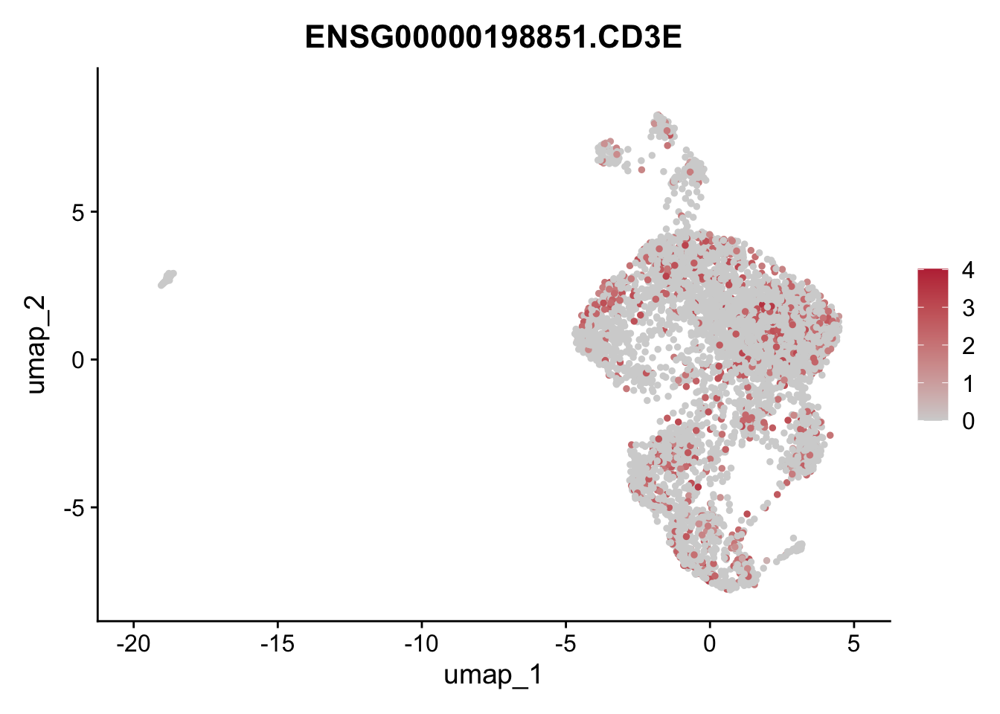
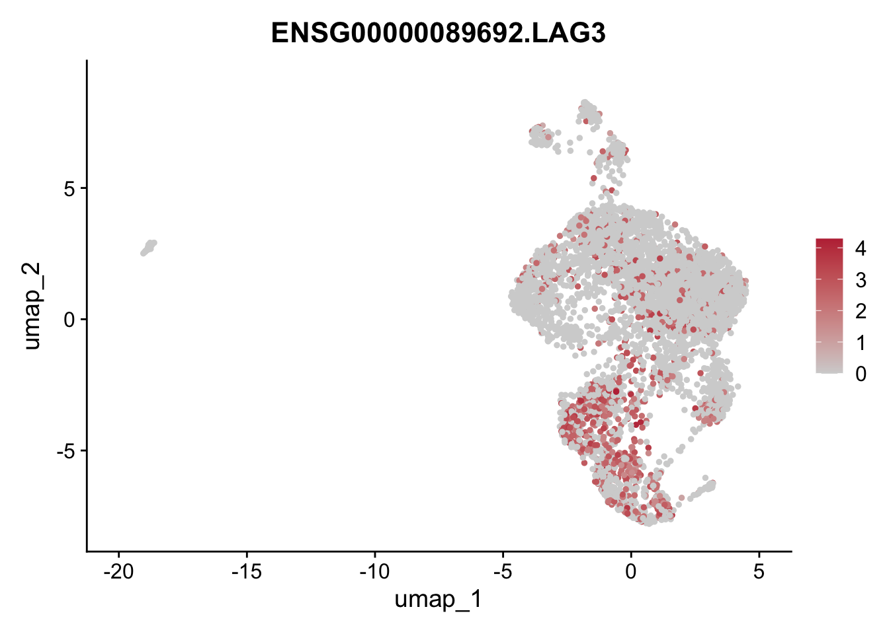

T cells preliminary GSEA
Emily Payne
2024-11-25
Last updated: 2024-11-25
Checks: 5 2
Knit directory: Myocarditis
snRNAseq/analysis/
This reproducible R Markdown analysis was created with workflowr (version 1.7.1). The Checks tab describes the reproducibility checks that were applied when the results were created. The Past versions tab lists the development history.
The R Markdown is untracked by Git. To know which version of the R
Markdown file created these results, you’ll want to first commit it to
the Git repo. If you’re still working on the analysis, you can ignore
this warning. When you’re finished, you can run
wflow_publish to commit the R Markdown file and build the
HTML.
Great job! The global environment was empty. Objects defined in the global environment can affect the analysis in your R Markdown file in unknown ways. For reproduciblity it’s best to always run the code in an empty environment.
The command set.seed(12345) was run prior to running the
code in the R Markdown file. Setting a seed ensures that any results
that rely on randomness, e.g. subsampling or permutations, are
reproducible.
Great job! Recording the operating system, R version, and package versions is critical for reproducibility.
Nice! There were no cached chunks for this analysis, so you can be confident that you successfully produced the results during this run.
Using absolute paths to the files within your workflowr project makes it difficult for you and others to run your code on a different machine. Change the absolute path(s) below to the suggested relative path(s) to make your code more reproducible.
| absolute | relative |
|---|---|
| /Users/immbio/Desktop/Emily/Myocarditis snRNAseq/docs/Markers/DEGenesTcell | ../docs/Markers/DEGenesTcell |
| ~/Desktop/Emily/Myocarditis snRNAseq/data/01 Merged Seurat files/Myocarditis_allfiltered_V3_15.11.2024.rds | ../data/01 Merged Seurat files/Myocarditis_allfiltered_V3_15.11.2024.rds |
Great! You are using Git for version control. Tracking code development and connecting the code version to the results is critical for reproducibility.
The results in this page were generated with repository version 05dd5a3. See the Past versions tab to see a history of the changes made to the R Markdown and HTML files.
Note that you need to be careful to ensure that all relevant files for
the analysis have been committed to Git prior to generating the results
(you can use wflow_publish or
wflow_git_commit). workflowr only checks the R Markdown
file, but you know if there are other scripts or data files that it
depends on. Below is the status of the Git repository when the results
were generated:
Ignored files:
Ignored: .DS_Store
Ignored: .Rhistory
Ignored: .Rproj.user/
Ignored: analysis/.DS_Store
Ignored: analysis/.Rhistory
Ignored: analysis/figure/
Ignored: data/
Untracked files:
Untracked: analysis/AM vs. Healthy subsets.Rmd
Untracked: analysis/DE genes AMsub vs. Healthy_V2.Rmd
Untracked: analysis/Immune_cells_V3.Rmd
Untracked: analysis/Interactome Analysis.Rmd
Untracked: analysis/Interactome Chellchat Analysis.Rmd
Untracked: analysis/T-cells.Rmd
Untracked: analysis/T_cells.Rmd
Unstaged changes:
Modified: analysis/Fibroblast_subset_V2.Rmd
Deleted: analysis/Immune_cells.Rmd
Modified: analysis/Myocarditis_snRNAseq_QC_merging_V3.Rmd
Modified: analysis/Stratification_Tcell_conditionV2.Rmd
Modified: analysis/Stratification_sex.Rmd
Modified: analysis/index.Rmd
Note that any generated files, e.g. HTML, png, CSS, etc., are not included in this status report because it is ok for generated content to have uncommitted changes.
There are no past versions. Publish this analysis with
wflow_publish() to start tracking its development.
suppressPackageStartupMessages({
library(ExploreSCdataSeurat3)
library(runSeurat3)
library(Seurat)
library(ggpubr)
library(pheatmap)
library(SingleCellExperiment)
library(dplyr)
library(tidyverse)
library(viridis)
library(muscat)
library(circlize)
library(destiny)
library(scater)
library(metap)
library(multtest)
library(clusterProfiler)
library(org.Hs.eg.db)
library(msigdbr)
library(enrichplot)
library(DOSE)
library(grid)
library(gridExtra)
library(ggupset)
library(VennDiagram)
library(NCmisc)
library(RColorBrewer)
library(EnhancedVolcano)
library(textshaping)
library(wordcloud)
library(pathview)
library(workflowr)
})##load merged file
seuratM <- readRDS("~/Desktop/Emily/Myocarditis snRNAseq/data/01 Merged Seurat files/Myocarditis_allfiltered_V3_15.11.2024.rds")
table(seuratM$RNA_snn_res.0.25)
0 1 2 3 4 5 6 7 8 9 10 11 12 13 14
17699 13639 12754 8222 5475 4836 3723 2365 2156 905 882 694 380 249 91 table(seuratM$patient)
Healthy 01 Healthy 02 Healthy 03 Healthy 04 Healthy 05 Healthy 06
3921 3818 4908 9882 1442 1998
Healthy 07 Healthy 08 AM 01 AM 02 AM 03 AM 04
841 1480 6286 4323 1123 208
AM 05 AM 06 AM 07 AM 08 AM 09 AM 10
579 335 1217 604 513 426
AM 11 AM 12 AM 13 AM 14 AM 15 AM 16
236 1192 2740 1684 4439 2247
AM 17 AM 18 CMP 01 CMP 02 CMP 03 CMP 04
316 608 105 227 730 1428
CMP 05 CMP 06 CMP 07 CMP 08 CMP 09 CMP 10
620 653 1268 2280 2396 545
CMP 11 CMP 12 CMP 13 Sarcoidosis 01 Sarcoidosis 02
781 491 111 2363 2706 table(seuratM$orig.ident)
74070 seuratM$clusterName <- "clusterName"
Idents(seuratM) <- seuratM$clusterName
seuratM$clusterName[which(seuratM$RNA_snn_res.0.25 %in% "0" )] <- "Fb1"
seuratM$clusterName[which(seuratM$RNA_snn_res.0.25 %in% "1" )] <- "BEC1"
seuratM$clusterName[which(seuratM$RNA_snn_res.0.25 %in% "2" )] <- "PeriFb1"
seuratM$clusterName[which(seuratM$RNA_snn_res.0.25 %in% "3" )] <- "Cardiomyocyte"
seuratM$clusterName[which(seuratM$RNA_snn_res.0.25 %in% "4" )] <- "MCP1"
seuratM$clusterName[which(seuratM$RNA_snn_res.0.25 %in% "5" )] <- "TC"
seuratM$clusterName[which(seuratM$RNA_snn_res.0.25 %in% "6" )] <- "MCP2"
seuratM$clusterName[which(seuratM$RNA_snn_res.0.25 %in% "7" )] <- "BEC2"
seuratM$clusterName[which(seuratM$RNA_snn_res.0.25 %in% "8" )] <- "VSMC"
seuratM$clusterName[which(seuratM$RNA_snn_res.0.25 %in% "9" )] <- "NC"
seuratM$clusterName[which(seuratM$RNA_snn_res.0.25 %in% "10" )] <- "INT1"
seuratM$clusterName[which(seuratM$RNA_snn_res.0.25 %in% "11" )] <- "Fb2"
seuratM$clusterName[which(seuratM$RNA_snn_res.0.25 %in% "12" )] <- "Fb3"
seuratM$clusterName[which(seuratM$RNA_snn_res.0.25 %in% "13" )] <- "PeriFb2"
seuratM$clusterName[which(seuratM$RNA_snn_res.0.25 %in% "14" )] <- "AdipoC"
colclusterName <- c("#D53E4F", "#f4a582", "#FEE08B","#feb24c","#67001f", "#01665e","#66C2A5","#c7eae5","#BEAED4", "#355C7D","#3288BD","#8c510a" ,"#fde0dd","#B45B5C","#dd1c77")
names(colclusterName) <- c("Cardiomyocyte","Fb1","Fb2","Fb3", "INT1", "PeriFb1", "PeriFb2", "VSMC","NC", "BEC1","BEC2", "AdipoC", "MCP1","MCP2","TC")
colpat_sub<- c("#dfc27d","#BE3144","#355C7D", "#779d8d")
seuratM$clusterName <- factor(seuratM$clusterName, levels=c("Cardiomyocyte", "Fb1", "Fb2", "Fb3", "INT1","PeriFb1", "PeriFb2", "VSMC", "NC", "BEC1", "BEC2", "AdipoC", "MCP1", "MCP2", "TC"))
Idents(seuratM) <- seuratM$clusterName
DimPlot(seuratM, reduction = "umap", pt.size = 0.1, label = TRUE, cols = colclusterName)
table(seuratM$patient, seuratM$TC)
Tcell High Tcell Intermediate Tcell Low Tcell Very Low
Healthy 01 0 0 0 3921
Healthy 02 0 0 0 3818
Healthy 03 0 0 0 4908
Healthy 04 0 0 0 9882
Healthy 05 0 0 0 1442
Healthy 06 0 0 0 1998
Healthy 07 0 0 0 841
Healthy 08 0 0 0 1480
AM 01 6286 0 0 0
AM 02 0 0 0 4323
AM 03 0 0 0 1123
AM 04 0 0 0 208
AM 05 0 0 0 579
AM 06 0 335 0 0
AM 07 0 0 0 1217
AM 08 0 0 604 0
AM 09 0 0 513 0
AM 10 0 0 0 426
AM 11 0 0 0 236
AM 12 0 0 0 1192
AM 13 0 2740 0 0
AM 14 0 0 1684 0
AM 15 0 0 4439 0
AM 16 2247 0 0 0
AM 17 316 0 0 0
AM 18 608 0 0 0
CMP 01 0 105 0 0
CMP 02 0 0 0 227
CMP 03 0 0 730 0
CMP 04 0 0 1428 0
CMP 05 0 0 620 0
CMP 06 0 0 0 653
CMP 07 0 0 1268 0
CMP 08 0 0 0 2280
CMP 09 0 0 0 2396
CMP 10 0 0 545 0
CMP 11 0 0 781 0
CMP 12 0 491 0 0
CMP 13 111 0 0 0
Sarcoidosis 01 0 0 2363 0
Sarcoidosis 02 0 0 2706 0## Subset from AM cohort, inflammatory clusters
seuratTcell <- subset(seuratM, clusterName %in% "TC")
table(seuratTcell$orig.ident)
4836 table(seuratTcell$patient, seuratTcell$clusterName)
Cardiomyocyte Fb1 Fb2 Fb3 INT1 PeriFb1 PeriFb2 VSMC NC BEC1 BEC2 AdipoC MCP1
Healthy 01 0 0 0 0 0 0 0 0 0 0 0 0 0
Healthy 02 0 0 0 0 0 0 0 0 0 0 0 0 0
Healthy 03 0 0 0 0 0 0 0 0 0 0 0 0 0
Healthy 04 0 0 0 0 0 0 0 0 0 0 0 0 0
Healthy 05 0 0 0 0 0 0 0 0 0 0 0 0 0
Healthy 06 0 0 0 0 0 0 0 0 0 0 0 0 0
Healthy 07 0 0 0 0 0 0 0 0 0 0 0 0 0
Healthy 08 0 0 0 0 0 0 0 0 0 0 0 0 0
AM 01 0 0 0 0 0 0 0 0 0 0 0 0 0
AM 02 0 0 0 0 0 0 0 0 0 0 0 0 0
AM 03 0 0 0 0 0 0 0 0 0 0 0 0 0
AM 04 0 0 0 0 0 0 0 0 0 0 0 0 0
AM 05 0 0 0 0 0 0 0 0 0 0 0 0 0
AM 06 0 0 0 0 0 0 0 0 0 0 0 0 0
AM 07 0 0 0 0 0 0 0 0 0 0 0 0 0
AM 08 0 0 0 0 0 0 0 0 0 0 0 0 0
AM 09 0 0 0 0 0 0 0 0 0 0 0 0 0
AM 10 0 0 0 0 0 0 0 0 0 0 0 0 0
AM 11 0 0 0 0 0 0 0 0 0 0 0 0 0
AM 12 0 0 0 0 0 0 0 0 0 0 0 0 0
AM 13 0 0 0 0 0 0 0 0 0 0 0 0 0
AM 14 0 0 0 0 0 0 0 0 0 0 0 0 0
AM 15 0 0 0 0 0 0 0 0 0 0 0 0 0
AM 16 0 0 0 0 0 0 0 0 0 0 0 0 0
AM 17 0 0 0 0 0 0 0 0 0 0 0 0 0
AM 18 0 0 0 0 0 0 0 0 0 0 0 0 0
CMP 01 0 0 0 0 0 0 0 0 0 0 0 0 0
CMP 02 0 0 0 0 0 0 0 0 0 0 0 0 0
CMP 03 0 0 0 0 0 0 0 0 0 0 0 0 0
CMP 04 0 0 0 0 0 0 0 0 0 0 0 0 0
CMP 05 0 0 0 0 0 0 0 0 0 0 0 0 0
CMP 06 0 0 0 0 0 0 0 0 0 0 0 0 0
CMP 07 0 0 0 0 0 0 0 0 0 0 0 0 0
CMP 08 0 0 0 0 0 0 0 0 0 0 0 0 0
CMP 09 0 0 0 0 0 0 0 0 0 0 0 0 0
CMP 10 0 0 0 0 0 0 0 0 0 0 0 0 0
CMP 11 0 0 0 0 0 0 0 0 0 0 0 0 0
CMP 12 0 0 0 0 0 0 0 0 0 0 0 0 0
CMP 13 0 0 0 0 0 0 0 0 0 0 0 0 0
Sarcoidosis 01 0 0 0 0 0 0 0 0 0 0 0 0 0
Sarcoidosis 02 0 0 0 0 0 0 0 0 0 0 0 0 0
MCP2 TC
Healthy 01 0 73
Healthy 02 0 34
Healthy 03 0 42
Healthy 04 0 78
Healthy 05 0 22
Healthy 06 0 39
Healthy 07 0 15
Healthy 08 0 19
AM 01 0 2824
AM 02 0 71
AM 03 0 19
AM 04 0 3
AM 05 0 10
AM 06 0 22
AM 07 0 5
AM 08 0 15
AM 09 0 13
AM 10 0 4
AM 11 0 0
AM 12 0 23
AM 13 0 212
AM 14 0 35
AM 15 0 144
AM 16 0 466
AM 17 0 82
AM 18 0 84
CMP 01 0 7
CMP 02 0 4
CMP 03 0 27
CMP 04 0 56
CMP 05 0 24
CMP 06 0 5
CMP 07 0 32
CMP 08 0 29
CMP 09 0 33
CMP 10 0 26
CMP 11 0 17
CMP 12 0 32
CMP 13 0 13
Sarcoidosis 01 0 56
Sarcoidosis 02 0 121table(seuratTcell$patient, seuratTcell$sex)
female male unknown
Healthy 01 0 0 73
Healthy 02 0 0 34
Healthy 03 0 0 42
Healthy 04 0 0 78
Healthy 05 0 0 22
Healthy 06 0 0 39
Healthy 07 0 0 15
Healthy 08 0 0 19
AM 01 2824 0 0
AM 02 0 71 0
AM 03 0 19 0
AM 04 3 0 0
AM 05 0 10 0
AM 06 22 0 0
AM 07 5 0 0
AM 08 0 15 0
AM 09 13 0 0
AM 10 4 0 0
AM 11 0 0 0
AM 12 0 23 0
AM 13 0 212 0
AM 14 35 0 0
AM 15 0 144 0
AM 16 466 0 0
AM 17 0 82 0
AM 18 84 0 0
CMP 01 0 7 0
CMP 02 4 0 0
CMP 03 0 27 0
CMP 04 56 0 0
CMP 05 0 24 0
CMP 06 0 5 0
CMP 07 0 32 0
CMP 08 0 29 0
CMP 09 0 33 0
CMP 10 0 26 0
CMP 11 0 17 0
CMP 12 0 32 0
CMP 13 13 0 0
Sarcoidosis 01 0 56 0
Sarcoidosis 02 0 121 0## Plot single Tcell cluster
Idents(seuratTcell) <- seuratTcell$clusterName
DimPlot(seuratTcell, reduction = "umap", cols = colclusterName, pt.size = 0.3)## Plot Tcell sorted by sex
colsex <- c("#dd1c77","#355C7D")
names(colsex) <- c("female", "male")
Idents(seuratTcell) <- seuratTcell$sex
DimPlot(seuratTcell, reduction = "umap", pt.size = 0.3, cols = colsex)## Plot Tcell sorted by Tcell
Idents(seuratTcell) <- (seuratTcell$TC)
colTC <- c("#BE3144","#de2d26","#fc9272", "#fee0d2")
names(colTC) <- c("Tcell High", "Tcell Intermediate", "Tcell Low", "Tcell Very Low")
DimPlot(seuratTcell, reduction = "umap", pt.size = 0.3, cols = colTC)Idents(seuratTcell) <- seuratTcell$clusterName
table(seuratM$clusterName)
Cardiomyocyte Fb1 Fb2 Fb3 INT1 PeriFb1 PeriFb2
8222 17699 694 380 882 12754 249
VSMC NC BEC1 BEC2 AdipoC MCP1 MCP2
2156 905 13639 2365 91 5475 3723
TC
4836 seuratTcell <- NormalizeData (object = seuratTcell)
seuratTcell <- FindVariableFeatures(object = seuratTcell)
seuratTcell <- ScaleData(object = seuratTcell, verbose = TRUE)
seuratTcell <- RunPCA(object = seuratTcell, npcs = 30, verbose = FALSE)
seuratTcell <- RunTSNE(object = seuratTcell, reduction="pca", dims = 1:20)
seuratTcell <- RunUMAP(object = seuratTcell, reduction="pca", dims = 1:20)
seuratTcell <- FindNeighbors(object = seuratTcell, reduction = "pca", dims= 1:20)
res <- c(0.25, 0.6, 0.8, 0.4, 0.3)
for (i in 1:length(res)) {
seuratTcell <- FindClusters(object = seuratTcell, resolution = res[i], random.seed = 1234)
}Modularity Optimizer version 1.3.0 by Ludo Waltman and Nees Jan van Eck
Number of nodes: 4836
Number of edges: 175920
Running Louvain algorithm...
Maximum modularity in 10 random starts: 0.8926
Number of communities: 9
Elapsed time: 0 seconds
Modularity Optimizer version 1.3.0 by Ludo Waltman and Nees Jan van Eck
Number of nodes: 4836
Number of edges: 175920
Running Louvain algorithm...
Maximum modularity in 10 random starts: 0.8314
Number of communities: 12
Elapsed time: 0 seconds
Modularity Optimizer version 1.3.0 by Ludo Waltman and Nees Jan van Eck
Number of nodes: 4836
Number of edges: 175920
Running Louvain algorithm...
Maximum modularity in 10 random starts: 0.7997
Number of communities: 12
Elapsed time: 0 seconds
Modularity Optimizer version 1.3.0 by Ludo Waltman and Nees Jan van Eck
Number of nodes: 4836
Number of edges: 175920
Running Louvain algorithm...
Maximum modularity in 10 random starts: 0.8648
Number of communities: 11
Elapsed time: 0 seconds
Modularity Optimizer version 1.3.0 by Ludo Waltman and Nees Jan van Eck
Number of nodes: 4836
Number of edges: 175920
Running Louvain algorithm...
Maximum modularity in 10 random starts: 0.8829
Number of communities: 10
Elapsed time: 0 secondstable(seuratTcell$orig.ident)
4836 table(seuratTcell$clusterName)
Cardiomyocyte Fb1 Fb2 Fb3 INT1 PeriFb1 PeriFb2
0 0 0 0 0 0 0
VSMC NC BEC1 BEC2 AdipoC MCP1 MCP2
0 0 0 0 0 0 0
TC
4836 ## Plot Tcell sorted by sex
colsex <- c("#dd1c77","#355C7D")
names(colsex) <- c("female", "male")
Idents(seuratTcell) <- seuratTcell$sex
DimPlot(seuratTcell, reduction = "umap", pt.size = 0.3, cols = colsex)
## Plot Tcell sorted by Tcell condition
Idents(seuratTcell) <- (seuratTcell$TC)
colTC <- c("#BE3144","#de2d26","#fc9272", "#fee0d2")
names(colTC) <- c("Tcell High", "Tcell Intermediate", "Tcell Low", "Tcell Very Low")
DimPlot(seuratTcell, reduction = "umap", pt.size = 0.3, cols = colTC)
Idents(seuratTcell) <- seuratTcell$clusterName
table(seuratM$clusterName)
Cardiomyocyte Fb1 Fb2 Fb3 INT1 PeriFb1 PeriFb2
8222 17699 694 380 882 12754 249
VSMC NC BEC1 BEC2 AdipoC MCP1 MCP2
2156 905 13639 2365 91 5475 3723
TC
4836 Idents (seuratTcell) <- seuratTcell$RNA_snn_res.0.25
DimPlot(seuratTcell, reduction = "umap", pt.size = 0.3, label = TRUE)Idents (seuratTcell) <- seuratTcell$RNA_snn_res.0.3
DimPlot(seuratTcell, reduction = "umap", pt.size = 0.3, label = TRUE)Idents (seuratTcell) <- seuratTcell$RNA_snn_res.0.4
DimPlot(seuratTcell, reduction = "umap", pt.size = 0.3, label = TRUE)Idents (seuratTcell) <- seuratTcell$RNA_snn_res.0.6
DimPlot(seuratTcell, reduction = "umap", pt.size = 0.3, label = TRUE)## Find all markers T cells, ILC, NK
DEGenesTcell <- FindAllMarkers (seuratTcell, only.pos = TRUE, logfc.threshold = 0.2) %>%
dplyr::filter(p_val_adj < 0.01)
#write.table(DEGenesTcell, file= "/Users/immbio/Desktop/Emily/Myocarditis snRNAseq/docs/Markers/DEGenesTcell", sep="\t",quote=F,row.names=F,col.names=T)
#View(DEGenesTcell)## Find marker genes for T cell subgroups
get_full_gene_name <- function(gene, obj){
return(grep(gene,rownames(obj), value =TRUE))
}
get_full_gene_name("XIST",seuratTcell) [1] "ENSG00000229807.XIST"FeaturePlot(seuratTcell, features = "ENSG00000081237.PTPRC", pt.size = 1, cols = c("lightgrey", "#BE3144"))FeaturePlot(seuratTcell, features = "ENSG00000168685.IL7R", pt.size = 1, cols = c("lightgrey", "#BE3144"))FeaturePlot(seuratTcell, features = "ENSG00000010610.CD4", pt.size = 1, cols = c("lightgrey", "#BE3144"))FeaturePlot(seuratTcell, features = "ENSG00000172116.CD8B", pt.size = 1, cols = c("lightgrey", "#BE3144"))FeaturePlot(seuratTcell, features = get_full_gene_name("CD8A", seuratTcell) , pt.size = 1, cols = c("lightgrey", "#BE3144"))# FeaturePlot(seuratTcell, features = "ENSG00000116824.CD2", pt.size = 1, cols = c("lightgrey", "#BE3144"))FeaturePlot(seuratTcell, features = "ENSG00000167286.CD3D", pt.size = 1, cols = c("lightgrey", "#BE3144"))FeaturePlot(seuratTcell, features = "ENSG00000198851.CD3E", pt.size = 1, cols = c("lightgrey", "#BE3144"))
FeaturePlot(seuratTcell, features = "ENSG00000178562.CD28", pt.size = 1, cols = c("lightgrey", "#BE3144"))FeaturePlot(seuratTcell, features = get_full_gene_name("CD96",seuratTcell) , pt.size = 1, cols = c("lightgrey", "#BE3144"))# FeaturePlot(seuratTcell, features = get_full_gene_name("RIPOR2",seuratTcell) , pt.size = 1, cols = c("lightgrey", "#BE3144"))# FeaturePlot(seuratTcell, features = "ENSG00000227507.LTB", pt.size = 1, cols = c("lightgrey", "#BE3144"))# Cluster 1 specFeaturePlot(seuratTcell, features = "ENSG00000069667.RORA", pt.size = 1, cols = c("lightgrey", "#BE3144"))# Cluster 1FeaturePlot(seuratTcell, features = get_full_gene_name("PATJ",seuratTcell) , pt.size = 1, cols = c("lightgrey", "#BE3144"))# #cl 6: CD8+ T cells proliferating ASPM, RRM2, KNL1, FANC; TOP2A, CEP152, DIAPH3, KIF18B, KIF14, CDCA3, TROAP, SAC3D1, MS4A7, ZNF683, GEN1, SAC8D1, SKA3, RAD54L, UWOMT. SPC25, BRACA1, BUB1B, Gen1, FoxM1, SKA3, CCNB1, SAC8D1, FANCI, CIT, SPAG5, ZNF683, E2F2, ZWINT
FeaturePlot(seuratTcell, features = "ENSG00000163599.CTLA4", pt.size = 1, cols = c("lightgrey", "#BE3144"))FeaturePlot(seuratTcell, features = get_full_gene_name("LAG3",seuratTcell) , pt.size = 1, cols = c("lightgrey", "#BE3144"))# exhaustion
FeaturePlot(seuratTcell, features = get_full_gene_name("TIGIT",seuratTcell) , pt.size = 1, cols = c("lightgrey", "#BE3144"))# FeaturePlot(seuratTcell, features = get_full_gene_name("PDCD1",seuratTcell) , pt.size = 1, cols = c("lightgrey", "#BE3144"))# FeaturePlot(seuratTcell, features = get_full_gene_name("HAVCR2",seuratTcell) , pt.size = 1, cols = c("lightgrey", "#BE3144"))# FeaturePlot(seuratTcell, features = get_full_gene_name("FOXP3",seuratTcell) , pt.size = 1, cols = c("lightgrey", "#BE3144"))# TregsFeaturePlot(seuratTcell, features = "ENSG00000136634.IL10", pt.size = 1, cols = c("lightgrey", "#BE3144"))FeaturePlot(seuratTcell, features = get_full_gene_name("TGFB1",seuratTcell) , pt.size = 1, cols = c("lightgrey", "#BE3144"))# FeaturePlot(seuratTcell, features = get_full_gene_name("STAT5A",seuratTcell) , pt.size = 1, cols = c("lightgrey", "#BE3144"))# FeaturePlot(seuratTcell, features = get_full_gene_name("STAT5B",seuratTcell) , pt.size = 1, cols = c("lightgrey", "#BE3144"))# FeaturePlot(seuratTcell, features = get_full_gene_name("RORC", seuratTcell) , pt.size = 1, cols = c("lightgrey", "#BE3144"))# Th17 (and also IL3)FeaturePlot(seuratTcell, features = get_full_gene_name("IL22", seuratTcell) , pt.size = 1, cols = c("lightgrey", "#BE3144"))# FeaturePlot(seuratTcell, features = get_full_gene_name("STAT3", seuratTcell) , pt.size = 1, cols = c("lightgrey", "#BE3144"))# FeaturePlot(seuratTcell, features = get_full_gene_name("IL17RA", seuratTcell) , pt.size = 1, cols = c("lightgrey", "#BE3144"))# did not find IL17A, only RFeaturePlot(seuratTcell, features = get_full_gene_name("CCR6", seuratTcell) , pt.size = 1, cols = c("lightgrey", "#BE3144"))FeaturePlot(seuratTcell, features = "ENSG00000162594.IL23R", pt.size = 1, cols = c("lightgrey", "#BE3144"))FeaturePlot(seuratTcell, features = "ENSG00000138795.LEF1", pt.size = 1, cols = c("lightgrey", "#BE3144"))FeaturePlot(seuratTcell, features = "ENSG00000109906.ZBTB16", pt.size = 1, cols = c("lightgrey", "#BE3144")) FeaturePlot(seuratTcell, features = "ENSG00000165810.BTNL9", pt.size = 1, cols = c("lightgrey", "#BE3144")) # MAITFeaturePlot(seuratTcell, features = get_full_gene_name("TBX21",seuratTcell) , pt.size = 1, cols = c("lightgrey", "#BE3144"))# Th1FeaturePlot(seuratTcell, features = get_full_gene_name("IFNG",seuratTcell) , pt.size = 1, cols = c("lightgrey", "#BE3144"))# FeaturePlot(seuratTcell, features = get_full_gene_name("IL12RB1",seuratTcell) , pt.size = 1, cols = c("lightgrey", "#BE3144"))#FeaturePlot(seuratTcell, features = get_full_gene_name("CXCR3",seuratTcell) , pt.size = 1, cols = c("lightgrey", "#BE3144"))# FeaturePlot(seuratTcell, features = get_full_gene_name("STAT4",seuratTcell) , pt.size = 1, cols = c("lightgrey", "#BE3144"))# FeaturePlot(seuratTcell, features = get_full_gene_name("GATA3",seuratTcell) , pt.size = 1, cols = c("lightgrey", "#BE3144"))# Th2FeaturePlot(seuratTcell, features = get_full_gene_name("BCL6",seuratTcell) , pt.size = 1, cols = c("lightgrey", "#BE3144"))# TfhFeaturePlot(seuratTcell, features = get_full_gene_name("IL21",seuratTcell) , pt.size = 1, cols = c("lightgrey", "#BE3144"))# FeaturePlot(seuratTcell, features = "ENSG00000163600.ICOS", pt.size = 1, cols = c("lightgrey", "#BE3144"))FeaturePlot(seuratTcell, features = get_full_gene_name("CCR5",seuratTcell) , pt.size = 1, cols = c("lightgrey", "#BE3144"))FeaturePlot(seuratTcell, features = "ENSG00000172116.CD8B", pt.size = 1, cols = c("lightgrey", "#BE3144"))
FeaturePlot(seuratTcell, features = get_full_gene_name("KIR2",seuratTcell) , pt.size = 1, cols = c("lightgrey", "#BE3144"))# FeaturePlot(seuratTcell, features = get_full_gene_name("GZMB",seuratTcell) , pt.size = 1, cols = c("lightgrey", "#BE3144"))# 
FeaturePlot(seuratTcell, features = get_full_gene_name("PRF1",seuratTcell) , pt.size = 1, cols = c("lightgrey", "#BE3144"))# FeaturePlot(seuratTcell, features = "ENSG00000104970.KIR3DX1", pt.size = 1, cols = c("lightgrey", "#BE3144"))FeaturePlot(seuratTcell, features = "ENSG00000111537.IFNG", pt.size = 1, cols = c("lightgrey", "#BE3144"))FeaturePlot(seuratTcell, features = get_full_gene_name("TRGV9",seuratTcell) , pt.size = 1, cols = c("lightgrey", "#BE3144")) #yd TcellsFeaturePlot(seuratTcell, features = get_full_gene_name("TRDV2",seuratTcell) , pt.size = 1, cols = c("lightgrey", "#BE3144")) # FeaturePlot(seuratTcell, features = get_full_gene_name("TRGC1",seuratTcell) , pt.size = 1, cols = c("lightgrey", "#BE3144")) FeaturePlot(seuratTcell, features = get_full_gene_name("KIR3DL1",seuratTcell) , pt.size = 1, cols = c("lightgrey", "#BE3144"))# NKFeaturePlot(seuratTcell, features = get_full_gene_name("TXK",seuratTcell) , pt.size = 1, cols = c("lightgrey", "#BE3144"))# FeaturePlot(seuratTcell, features = get_full_gene_name("NCAM1",seuratTcell) , pt.size = 1, cols = c("lightgrey", "#BE3144")) #CD56,NK markerFeaturePlot(seuratTcell, features = get_full_gene_name("KLRD1",seuratTcell) , pt.size = 1, cols = c("lightgrey", "#BE3144")) # CD94FeaturePlot(seuratTcell, features = get_full_gene_name("FCGR3A",seuratTcell) , pt.size = 1, cols = c("lightgrey", "#BE3144")) #CD16FeaturePlot(seuratTcell, features = get_full_gene_name("GZMB",seuratTcell) , pt.size = 1, cols = c("lightgrey", "#BE3144"))FeaturePlot(seuratTcell, features = "ENSG00000189430.NCR1", pt.size = 1, cols = c("lightgrey", "#BE3144"))FeaturePlot(seuratTcell, features = "ENSG00000004468.CD38", pt.size = 1, cols = c("lightgrey", "#BE3144"))FeaturePlot(seuratTcell, features = get_full_gene_name("JCHAIN",seuratTcell) , pt.size = 1, cols = c("lightgrey", "#BE3144"))# plasma cellsFeaturePlot(seuratTcell, features = "ENSG00000057657.PRDM1", pt.size = 1, cols = c("lightgrey", "#BE3144"))FeaturePlot(seuratTcell, features = "ENSG00000211899.IGHM", pt.size = 1, cols = c("lightgrey", "#BE3144"))## proliferating cells FeaturePlot(seuratTcell, features = "ENSG00000156738.MS4A1", pt.size = 1, cols = c("lightgrey", "#BE3144")) # CD20FeaturePlot(seuratTcell, features = get_full_gene_name("CD19",seuratTcell) , pt.size = 1, cols = c("lightgrey", "#BE3144"))# FeaturePlot(seuratTcell, features = "ENSG00000148773.MKI67", pt.size = 1, cols = c("lightgrey", "#BE3144"))## proliferating cells
FeaturePlot(seuratTcell, features = get_full_gene_name("TOP2A", seuratTcell) , pt.size = 1, cols = c("lightgrey", "#BE3144"))FeaturePlot(seuratTcell, features = get_full_gene_name("SELL",seuratTcell) , pt.size = 1, cols = c("lightgrey", "#BE3144")) # SELL = CD62L# naiveFeaturePlot(seuratTcell, features = get_full_gene_name("PTPRC",seuratTcell) , pt.size = 1, cols = c("lightgrey", "#BE3144")) #CD45FeaturePlot(seuratTcell, features = get_full_gene_name("CCR7",seuratTcell) , pt.size = 1, cols = c("lightgrey", "#BE3144"))FeaturePlot(seuratTcell, features = get_full_gene_name("CXCL12",seuratTcell) , pt.size = 1, cols = c("lightgrey", "#BE3144"))FeaturePlot(seuratTcell, features = "ENSG00000110448.CD5", pt.size = 1, cols = c("lightgrey", "#BE3144"))FeaturePlot(seuratTcell, features = get_full_gene_name("STAT1",seuratTcell) , pt.size = 1, cols = c("lightgrey", "#BE3144"))# FeaturePlot(seuratTcell, features = get_full_gene_name("STAT2",seuratTcell) , pt.size = 1, cols = c("lightgrey", "#BE3144"))# FeaturePlot(seuratTcell, features = get_full_gene_name("STAT3",seuratTcell) , pt.size = 1, cols = c("lightgrey", "#BE3144"))# 
FeaturePlot(seuratTcell, features = get_full_gene_name("STAT4",seuratTcell) , pt.size = 1, cols = c("lightgrey", "#BE3144"))# 
FeaturePlot(seuratTcell, features = get_full_gene_name("STAT5",seuratTcell) , pt.size = 1, cols = c("lightgrey", "#BE3144"))# date()[1] "Mon Nov 25 22:49:58 2024"sessionInfo()R version 4.4.1 (2024-06-14)
Platform: aarch64-apple-darwin20
Running under: macOS Sonoma 14.3
Matrix products: default
BLAS: /Library/Frameworks/R.framework/Versions/4.4-arm64/Resources/lib/libRblas.0.dylib
LAPACK: /Library/Frameworks/R.framework/Versions/4.4-arm64/Resources/lib/libRlapack.dylib; LAPACK version 3.12.0
locale:
[1] en_US.UTF-8/en_US.UTF-8/en_US.UTF-8/C/en_US.UTF-8/en_US.UTF-8
time zone: Europe/Zurich
tzcode source: internal
attached base packages:
[1] grid stats4 stats graphics grDevices utils datasets methods base
other attached packages:
[1] workflowr_1.7.1 pathview_1.44.0 wordcloud_2.6
[4] textshaping_0.4.0 EnhancedVolcano_1.22.0 ggrepel_0.9.6
[7] RColorBrewer_1.1-3 NCmisc_1.2.0 VennDiagram_1.7.3
[10] futile.logger_1.4.3 ggupset_0.4.0 gridExtra_2.3
[13] DOSE_3.30.5 enrichplot_1.24.4 msigdbr_7.5.1
[16] org.Hs.eg.db_3.19.1 AnnotationDbi_1.66.0 clusterProfiler_4.12.6
[19] multtest_2.60.0 metap_1.11 scater_1.32.1
[22] scuttle_1.14.0 destiny_3.18.0 circlize_0.4.16
[25] muscat_1.18.0 viridis_0.6.5 viridisLite_0.4.2
[28] lubridate_1.9.3 forcats_1.0.0 stringr_1.5.1
[31] purrr_1.0.2 readr_2.1.5 tidyr_1.3.1
[34] tibble_3.2.1 tidyverse_2.0.0 dplyr_1.1.4
[37] SingleCellExperiment_1.26.0 SummarizedExperiment_1.34.0 Biobase_2.64.0
[40] GenomicRanges_1.56.1 GenomeInfoDb_1.40.1 IRanges_2.38.1
[43] S4Vectors_0.42.1 BiocGenerics_0.50.0 MatrixGenerics_1.16.0
[46] matrixStats_1.4.1 pheatmap_1.0.12 ggpubr_0.6.0
[49] ggplot2_3.5.1 Seurat_5.1.0 SeuratObject_5.0.2
[52] sp_2.1-4 runSeurat3_0.1.0 ExploreSCdataSeurat3_0.1.0
loaded via a namespace (and not attached):
[1] graph_1.82.0 igraph_2.0.3 ica_1.0-3
[4] plotly_4.10.4 Formula_1.2-5 zlibbioc_1.50.0
[7] tidyselect_1.2.1 bit_4.5.0 doParallel_1.0.17
[10] clue_0.3-65 lattice_0.22-6 rjson_0.2.23
[13] blob_1.2.4 S4Arrays_1.4.1 pbkrtest_0.5.3
[16] parallel_4.4.1 png_0.1-8 plotrix_3.8-4
[19] cli_3.6.3 ggplotify_0.1.2 goftest_1.2-3
[22] VIM_6.2.2 variancePartition_1.34.0 BiocNeighbors_1.22.0
[25] shadowtext_0.1.4 uwot_0.2.2 curl_5.2.3
[28] tidytree_0.4.6 mime_0.12 evaluate_1.0.1
[31] leiden_0.4.3.1 ComplexHeatmap_2.20.0 stringi_1.8.4
[34] backports_1.5.0 XML_3.99-0.17 lmerTest_3.1-3
[37] qqconf_1.3.2 httpuv_1.6.15 magrittr_2.0.3
[40] rappdirs_0.3.3 splines_4.4.1 ggraph_2.2.1
[43] sctransform_0.4.1 ggbeeswarm_0.7.2 DBI_1.2.3
[46] jquerylib_0.1.4 smoother_1.3 withr_3.0.1
[49] git2r_0.33.0 corpcor_1.6.10 systemfonts_1.1.0
[52] reformulas_0.3.0 class_7.3-22 rprojroot_2.0.4
[55] lmtest_0.9-40 tidygraph_1.3.1 formatR_1.14
[58] colourpicker_1.3.0 htmlwidgets_1.6.4 fs_1.6.4
[61] labeling_0.4.3 fANCOVA_0.6-1 SparseArray_1.4.8
[64] DESeq2_1.44.0 ranger_0.16.0 DEoptimR_1.1-3
[67] reticulate_1.39.0 hexbin_1.28.4 zoo_1.8-12
[70] XVector_0.44.0 knitr_1.48 ggplot.multistats_1.0.1
[73] UCSC.utils_1.0.0 RhpcBLASctl_0.23-42 timechange_0.3.0
[76] foreach_1.5.2 fansi_1.0.6 patchwork_1.3.0
[79] caTools_1.18.3 ggtree_3.12.0 data.table_1.16.0
[82] R.oo_1.26.0 RSpectra_0.16-2 irlba_2.3.5.1
[85] gridGraphics_0.5-1 fastDummies_1.7.4 lazyeval_0.2.2
[88] yaml_2.3.10 survival_3.7-0 scattermore_1.2
[91] crayon_1.5.3 RcppAnnoy_0.0.22 Rgraphviz_2.48.0
[94] progressr_0.14.0 tweenr_2.0.3 later_1.3.2
[97] ggridges_0.5.6 codetools_0.2-20 GlobalOptions_0.1.2
[100] aod_1.3.3 KEGGREST_1.44.1 Rtsne_0.17
[103] shape_1.4.6.1 limma_3.60.6 pkgconfig_2.0.3
[106] KEGGgraph_1.64.0 TMB_1.9.15 spatstat.univar_3.0-1
[109] mathjaxr_1.6-0 getPass_0.2-4 EnvStats_3.0.0
[112] aplot_0.2.3 scatterplot3d_0.3-44 ape_5.8
[115] spatstat.sparse_3.1-0 xtable_1.8-4 car_3.1-3
[118] highr_0.11 plyr_1.8.9 httr_1.4.7
[121] rbibutils_2.3 tools_4.4.1 globals_0.16.3
[124] beeswarm_0.4.0 broom_1.0.7 nlme_3.1-166
[127] lambda.r_1.2.4 lme4_1.1-35.5 digest_0.6.37
[130] numDeriv_2016.8-1.1 Matrix_1.7-0 farver_2.1.2
[133] tzdb_0.4.0 remaCor_0.0.18 reshape2_1.4.4
[136] yulab.utils_0.1.7 glue_1.8.0 cachem_1.1.0
[139] polyclip_1.10-7 generics_0.1.3 Biostrings_2.72.1
[142] mvtnorm_1.3-1 presto_1.0.0 parallelly_1.38.0
[145] mnormt_2.1.1 statmod_1.5.0 RcppHNSW_0.6.0
[148] ScaledMatrix_1.12.0 carData_3.0-5 minqa_1.2.8
[151] pbapply_1.7-2 httr2_1.0.5 spam_2.11-0
[154] gson_0.1.0 utf8_1.2.4 graphlayouts_1.2.0
[157] gtools_3.9.5 ggsignif_0.6.4 RcppEigen_0.3.4.0.2
[160] shiny_1.9.1 GenomeInfoDbData_1.2.12 glmmTMB_1.1.10
[163] R.utils_2.12.3 RCurl_1.98-1.16 memoise_2.0.1
[166] rmarkdown_2.28 scales_1.3.0 R.methodsS3_1.8.2
[169] future_1.34.0 RANN_2.6.2 Cairo_1.6-2
[172] spatstat.data_3.1-2 rstudioapi_0.16.0 whisker_0.4.1
[175] cluster_2.1.6 mutoss_0.1-13 spatstat.utils_3.1-0
[178] hms_1.1.3 fitdistrplus_1.2-1 munsell_0.5.1
[181] cowplot_1.1.3 colorspace_2.1-1 rlang_1.1.4
[184] DelayedMatrixStats_1.26.0 sparseMatrixStats_1.16.0 xts_0.14.0
[187] dotCall64_1.2 shinydashboard_0.7.2 ggforce_0.4.2
[190] laeken_0.5.3 mgcv_1.9-1 xfun_0.48
[193] e1071_1.7-16 TH.data_1.1-2 iterators_1.0.14
[196] abind_1.4-8 GOSemSim_2.30.2 treeio_1.28.0
[199] ps_1.8.0 futile.options_1.0.1 bitops_1.0-9
[202] Rdpack_2.6.1 promises_1.3.0 scatterpie_0.2.4
[205] RSQLite_2.3.7 qvalue_2.36.0 sandwich_3.1-1
[208] fgsea_1.30.0 DelayedArray_0.30.1 proxy_0.4-27
[211] GO.db_3.19.1 compiler_4.4.1 prettyunits_1.2.0
[214] boot_1.3-31 beachmat_2.20.0 listenv_0.9.1
[217] Rcpp_1.0.13 edgeR_4.2.1 BiocSingular_1.20.0
[220] tensor_1.5 MASS_7.3-61 progress_1.2.3
[223] BiocParallel_1.38.0 babelgene_22.9 spatstat.random_3.3-2
[226] R6_2.5.1 fastmap_1.2.0 multcomp_1.4-26
[229] fastmatch_1.1-4 rstatix_0.7.2 vipor_0.4.7
[232] TTR_0.24.4 ROCR_1.0-11 TFisher_0.2.0
[235] rsvd_1.0.5 vcd_1.4-13 nnet_7.3-19
[238] gtable_0.3.5 KernSmooth_2.23-24 miniUI_0.1.1.1
[241] deldir_2.0-4 htmltools_0.5.8.1 ggthemes_5.1.0
[244] bit64_4.5.2 spatstat.explore_3.3-2 lifecycle_1.0.4
[247] blme_1.0-6 processx_3.8.4 callr_3.7.6
[250] nloptr_2.1.1 sass_0.4.9 vctrs_0.6.5
[253] robustbase_0.99-4-1 spatstat.geom_3.3-3 sn_2.1.1
[256] ggfun_0.1.6 future.apply_1.11.2 bslib_0.8.0
[259] pillar_1.9.0 gplots_3.2.0 pcaMethods_1.96.0
[262] locfit_1.5-9.10 jsonlite_1.8.9 GetoptLong_1.0.5
sessionInfo()R version 4.4.1 (2024-06-14)
Platform: aarch64-apple-darwin20
Running under: macOS Sonoma 14.3
Matrix products: default
BLAS: /Library/Frameworks/R.framework/Versions/4.4-arm64/Resources/lib/libRblas.0.dylib
LAPACK: /Library/Frameworks/R.framework/Versions/4.4-arm64/Resources/lib/libRlapack.dylib; LAPACK version 3.12.0
locale:
[1] en_US.UTF-8/en_US.UTF-8/en_US.UTF-8/C/en_US.UTF-8/en_US.UTF-8
time zone: Europe/Zurich
tzcode source: internal
attached base packages:
[1] grid stats4 stats graphics grDevices utils datasets methods base
other attached packages:
[1] workflowr_1.7.1 pathview_1.44.0 wordcloud_2.6
[4] textshaping_0.4.0 EnhancedVolcano_1.22.0 ggrepel_0.9.6
[7] RColorBrewer_1.1-3 NCmisc_1.2.0 VennDiagram_1.7.3
[10] futile.logger_1.4.3 ggupset_0.4.0 gridExtra_2.3
[13] DOSE_3.30.5 enrichplot_1.24.4 msigdbr_7.5.1
[16] org.Hs.eg.db_3.19.1 AnnotationDbi_1.66.0 clusterProfiler_4.12.6
[19] multtest_2.60.0 metap_1.11 scater_1.32.1
[22] scuttle_1.14.0 destiny_3.18.0 circlize_0.4.16
[25] muscat_1.18.0 viridis_0.6.5 viridisLite_0.4.2
[28] lubridate_1.9.3 forcats_1.0.0 stringr_1.5.1
[31] purrr_1.0.2 readr_2.1.5 tidyr_1.3.1
[34] tibble_3.2.1 tidyverse_2.0.0 dplyr_1.1.4
[37] SingleCellExperiment_1.26.0 SummarizedExperiment_1.34.0 Biobase_2.64.0
[40] GenomicRanges_1.56.1 GenomeInfoDb_1.40.1 IRanges_2.38.1
[43] S4Vectors_0.42.1 BiocGenerics_0.50.0 MatrixGenerics_1.16.0
[46] matrixStats_1.4.1 pheatmap_1.0.12 ggpubr_0.6.0
[49] ggplot2_3.5.1 Seurat_5.1.0 SeuratObject_5.0.2
[52] sp_2.1-4 runSeurat3_0.1.0 ExploreSCdataSeurat3_0.1.0
loaded via a namespace (and not attached):
[1] graph_1.82.0 igraph_2.0.3 ica_1.0-3
[4] plotly_4.10.4 Formula_1.2-5 zlibbioc_1.50.0
[7] tidyselect_1.2.1 bit_4.5.0 doParallel_1.0.17
[10] clue_0.3-65 lattice_0.22-6 rjson_0.2.23
[13] blob_1.2.4 S4Arrays_1.4.1 pbkrtest_0.5.3
[16] parallel_4.4.1 png_0.1-8 plotrix_3.8-4
[19] cli_3.6.3 ggplotify_0.1.2 goftest_1.2-3
[22] VIM_6.2.2 variancePartition_1.34.0 BiocNeighbors_1.22.0
[25] shadowtext_0.1.4 uwot_0.2.2 curl_5.2.3
[28] tidytree_0.4.6 mime_0.12 evaluate_1.0.1
[31] leiden_0.4.3.1 ComplexHeatmap_2.20.0 stringi_1.8.4
[34] backports_1.5.0 XML_3.99-0.17 lmerTest_3.1-3
[37] qqconf_1.3.2 httpuv_1.6.15 magrittr_2.0.3
[40] rappdirs_0.3.3 splines_4.4.1 ggraph_2.2.1
[43] sctransform_0.4.1 ggbeeswarm_0.7.2 DBI_1.2.3
[46] jquerylib_0.1.4 smoother_1.3 withr_3.0.1
[49] git2r_0.33.0 corpcor_1.6.10 systemfonts_1.1.0
[52] reformulas_0.3.0 class_7.3-22 rprojroot_2.0.4
[55] lmtest_0.9-40 tidygraph_1.3.1 formatR_1.14
[58] colourpicker_1.3.0 htmlwidgets_1.6.4 fs_1.6.4
[61] labeling_0.4.3 fANCOVA_0.6-1 SparseArray_1.4.8
[64] DESeq2_1.44.0 ranger_0.16.0 DEoptimR_1.1-3
[67] reticulate_1.39.0 hexbin_1.28.4 zoo_1.8-12
[70] XVector_0.44.0 knitr_1.48 ggplot.multistats_1.0.1
[73] UCSC.utils_1.0.0 RhpcBLASctl_0.23-42 timechange_0.3.0
[76] foreach_1.5.2 fansi_1.0.6 patchwork_1.3.0
[79] caTools_1.18.3 ggtree_3.12.0 data.table_1.16.0
[82] R.oo_1.26.0 RSpectra_0.16-2 irlba_2.3.5.1
[85] gridGraphics_0.5-1 fastDummies_1.7.4 lazyeval_0.2.2
[88] yaml_2.3.10 survival_3.7-0 scattermore_1.2
[91] crayon_1.5.3 RcppAnnoy_0.0.22 Rgraphviz_2.48.0
[94] progressr_0.14.0 tweenr_2.0.3 later_1.3.2
[97] ggridges_0.5.6 codetools_0.2-20 GlobalOptions_0.1.2
[100] aod_1.3.3 KEGGREST_1.44.1 Rtsne_0.17
[103] shape_1.4.6.1 limma_3.60.6 pkgconfig_2.0.3
[106] KEGGgraph_1.64.0 TMB_1.9.15 spatstat.univar_3.0-1
[109] mathjaxr_1.6-0 getPass_0.2-4 EnvStats_3.0.0
[112] aplot_0.2.3 scatterplot3d_0.3-44 ape_5.8
[115] spatstat.sparse_3.1-0 xtable_1.8-4 car_3.1-3
[118] highr_0.11 plyr_1.8.9 httr_1.4.7
[121] rbibutils_2.3 tools_4.4.1 globals_0.16.3
[124] beeswarm_0.4.0 broom_1.0.7 nlme_3.1-166
[127] lambda.r_1.2.4 lme4_1.1-35.5 digest_0.6.37
[130] numDeriv_2016.8-1.1 Matrix_1.7-0 farver_2.1.2
[133] tzdb_0.4.0 remaCor_0.0.18 reshape2_1.4.4
[136] yulab.utils_0.1.7 glue_1.8.0 cachem_1.1.0
[139] polyclip_1.10-7 generics_0.1.3 Biostrings_2.72.1
[142] mvtnorm_1.3-1 presto_1.0.0 parallelly_1.38.0
[145] mnormt_2.1.1 statmod_1.5.0 RcppHNSW_0.6.0
[148] ScaledMatrix_1.12.0 carData_3.0-5 minqa_1.2.8
[151] pbapply_1.7-2 httr2_1.0.5 spam_2.11-0
[154] gson_0.1.0 utf8_1.2.4 graphlayouts_1.2.0
[157] gtools_3.9.5 ggsignif_0.6.4 RcppEigen_0.3.4.0.2
[160] shiny_1.9.1 GenomeInfoDbData_1.2.12 glmmTMB_1.1.10
[163] R.utils_2.12.3 RCurl_1.98-1.16 memoise_2.0.1
[166] rmarkdown_2.28 scales_1.3.0 R.methodsS3_1.8.2
[169] future_1.34.0 RANN_2.6.2 Cairo_1.6-2
[172] spatstat.data_3.1-2 rstudioapi_0.16.0 whisker_0.4.1
[175] cluster_2.1.6 mutoss_0.1-13 spatstat.utils_3.1-0
[178] hms_1.1.3 fitdistrplus_1.2-1 munsell_0.5.1
[181] cowplot_1.1.3 colorspace_2.1-1 rlang_1.1.4
[184] DelayedMatrixStats_1.26.0 sparseMatrixStats_1.16.0 xts_0.14.0
[187] dotCall64_1.2 shinydashboard_0.7.2 ggforce_0.4.2
[190] laeken_0.5.3 mgcv_1.9-1 xfun_0.48
[193] e1071_1.7-16 TH.data_1.1-2 iterators_1.0.14
[196] abind_1.4-8 GOSemSim_2.30.2 treeio_1.28.0
[199] ps_1.8.0 futile.options_1.0.1 bitops_1.0-9
[202] Rdpack_2.6.1 promises_1.3.0 scatterpie_0.2.4
[205] RSQLite_2.3.7 qvalue_2.36.0 sandwich_3.1-1
[208] fgsea_1.30.0 DelayedArray_0.30.1 proxy_0.4-27
[211] GO.db_3.19.1 compiler_4.4.1 prettyunits_1.2.0
[214] boot_1.3-31 beachmat_2.20.0 listenv_0.9.1
[217] Rcpp_1.0.13 edgeR_4.2.1 BiocSingular_1.20.0
[220] tensor_1.5 MASS_7.3-61 progress_1.2.3
[223] BiocParallel_1.38.0 babelgene_22.9 spatstat.random_3.3-2
[226] R6_2.5.1 fastmap_1.2.0 multcomp_1.4-26
[229] fastmatch_1.1-4 rstatix_0.7.2 vipor_0.4.7
[232] TTR_0.24.4 ROCR_1.0-11 TFisher_0.2.0
[235] rsvd_1.0.5 vcd_1.4-13 nnet_7.3-19
[238] gtable_0.3.5 KernSmooth_2.23-24 miniUI_0.1.1.1
[241] deldir_2.0-4 htmltools_0.5.8.1 ggthemes_5.1.0
[244] bit64_4.5.2 spatstat.explore_3.3-2 lifecycle_1.0.4
[247] blme_1.0-6 processx_3.8.4 callr_3.7.6
[250] nloptr_2.1.1 sass_0.4.9 vctrs_0.6.5
[253] robustbase_0.99-4-1 spatstat.geom_3.3-3 sn_2.1.1
[256] ggfun_0.1.6 future.apply_1.11.2 bslib_0.8.0
[259] pillar_1.9.0 gplots_3.2.0 pcaMethods_1.96.0
[262] locfit_1.5-9.10 jsonlite_1.8.9 GetoptLong_1.0.5